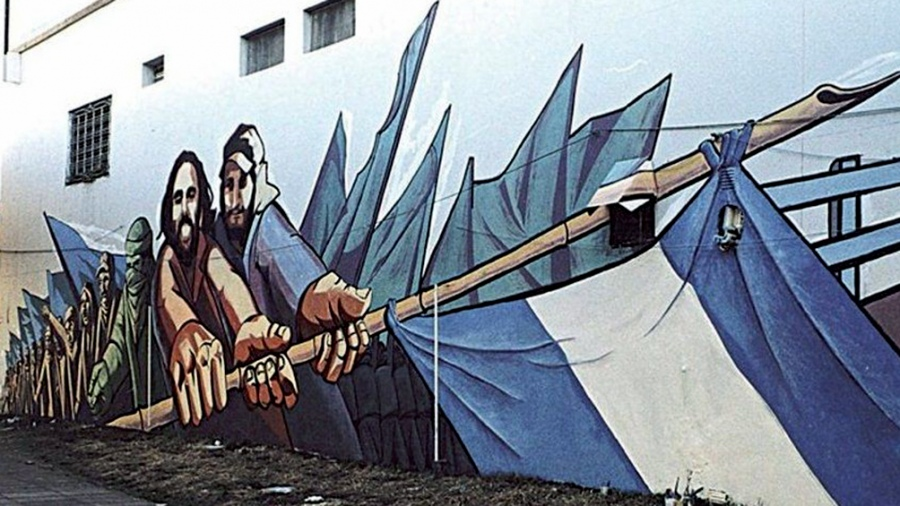
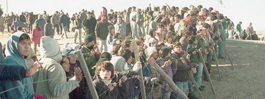

1. 📺 VD VC Blender: despidos masivos y rebelión al aire que expuso la precarización en los "nuevos medios"
El canal de streaming Blender despidió a ~20 trabajadores tras un pedido colectivo de cumplimiento de acuerdos salariales. La conductora Fiorella Sargenti cortó la transmisión en vivo: "No podemos, porque si tocan a uno, tocan a todos." SIPREBA repudió la medida antisindical; SATSAID exige reincorporación. El dueño Augusto Marini (Cale Group) también controla Carajo y se preadjudicó Canal de la Ciudad.
El miércoles 25 de junio, la conductora Fiorella Sargenti interrumpió su programa "Último Aviso" en Blender al descubrir que sus compañeros habían sido despedidos. Minutos antes, la mayoría del personal —on air, producción, comercial, redes sociales— había enviado un correo colectivo a la gerencia reclamando el pago de vacaciones, la aplicación del aumento trimestral pactado y la resolución de situaciones de compañeros afectados por cambios recientes. Lo que pedían era una mesa de diálogo organizada. La respuesta de la empresa fue despedir a los firmantes y colocar guardias de seguridad en la puerta. Sargenti declaró en vivo: "Está sucediendo una situación laboral con nuestros compañeros" y "No podemos, porque si tocan a uno, tocan a todos; así funciona la solidaridad laboral." Guille Aquino denunció la presencia de rompehuelgas. SATSAID (Horacio Arreceygor) repudió los despidos como represalia antisindical y señaló que desde 2024 reclama la regularización laboral del streaming bajo convenio colectivo —sin respuesta—; la empresa bloqueó una inspección conjunta con el Gobierno de la Ciudad. SIPREBA (Sindicato de Prensa de Buenos Aires) repudió "la medida antisindical" y expresó solidaridad total. Somos los Medios de la Ciudad conectó los despidos con la preadjudicación de Canal de la Ciudad por Cale Group Media SA, la misma empresa de Marini. Blender es la punta de un modelo: streaming, YouTube, Twitch como fachada de modernidad que oculta trabajo sin convenio, sin obra social, sin aportes. Marini —dueño de Blender y Carajo, el canal pro-oficialismo con "Gordo Dan" y "Las Fuerzas del Cielo"— recibió del gobierno libertario un contrato directo de ~4 millones de dólares para reparaciones ferroviarias durante la emergencia trenes, y ahora se preadjudicó Canal de la Ciudad por 35 millones más que la oferta rival, con un canon mensual de 50 millones. La cadena es clara: negocio con el Estado, expansión mediática, despidos al primer reclamo salarial. Blender respondió con un comunicado que dice "genera trabajo para más de 100 personas, honra sus compromisos" —sin abordar reclamos salariales, clasificación laboral ni acusaciones antisindicales—.
VD — despidos antisindicales como represalia ante reclamo salarial colectivo; militarización del espacio laboral (guardias, bloqueo de ingreso); uso de rompehuelgas; bloqueo de inspección laboral.
VC — narrativa "generamos empleo" que silencia precarización y antisindicalismo; streaming como fachada de modernidad que naturaliza trabajo sin convenio; empresa con contratos estatales directos despidiendo al primer reclamo.
2. ✊ CGT: plan de acción conjunta con paro general y marcha federal, tras debate de 4 horas
El Consejo Directivo de la CGT resolvió tras casi 4 horas de debate iniciar un plan de acción conjunta con CTA y organizaciones sociales, con paro general y marcha federal como horizonte. El sector de Barrionuevo presionó por paro inmediato. No se fijó fecha —Sola citó razones "tácticas." La comisión de acción se forma la semana que viene.
La CGT celebró su Consejo Directivo en la sede de Azopardo tras casi cuatro horas de debate intenso. La resolución central: iniciar la construcción de un plan de acción conjunto con las otras centrales obreras, culminando en un paro general y una marcha federal. El triunvirato —Sola, Jerónimo, Daer— presentó la propuesta tras consultas previas con federaciones y CTA. Jorge Sola contextualizó: "Es la continuidad de un plan de acción que inició la CGT hace más de 2 años," recordando las 4 huelgas generales y más de 15 marchas ya ejecutadas contra Milei. El sector de Luis Barrionuevo (Gastronómicos) presionó por un paro inmediato, pero no logró consenso. Los "Gordos" —bloque dialoguista— varios enviaron representantes de confianza o no asistieron. No se fijó fecha para el paro general: Sola lo atribuyó a razones "tácticas." La semana que viene se forma una comisión propia de la CGT para ordenar las acciones, que tendrán expresiones regionales antes de culminar en una nacional. Andrés Rodríguez (UPCN, secretario adjunto CGT) marcó un giro discursivo significativo: pidió darle a las protestas "una proyección política para que haya un cambio sustancial el año que viene durante las elecciones de 2027" —una explicitación electoral que desplaza la CGT de la defensa laboral pura hacia una estrategia de cambio político por vía legislativa y electoral. La definición no es un paro inmediato sino una construcción gradual: un plan escalonado que combina conflictos sectoriales, movilizaciones provinciales y convergencia nacional, articulando con CTA y organizaciones sociales. La pregunta es si la gradualidad le da tiempo al gobierno para profundizar la reforma o si permite acumular fuerzas para una movilización decisiva.
3. 🔥 CGT interna: furia por la reunión de Daer con Vidal, el gobernador que dio quórum para la Reforma Laboral
Héctor Daer —secretario de Interior de la CGT— no asistió al Consejo Directivo donde se definía el plan de protesta y fue a reunirse con el gobernador Claudio Vidal, quien ordenó al diputado Garrido sentarse para dar el quórum 129 que permitió aprobar la Reforma Laboral de Milei. Líderes cegetistas descubrieron la reunión por fotos de WhatsApp. Un dirigente: "Se vota con la mano y se vota con el culo, sentándose para dar quórum."
La interna de la CGT explotó en un escándalo que revela la fractura entre conducción y bases en un momento crítico. Héctor Daer, secretario general de Interior y miembro del triunvirato cegetista, no asistió al Consejo Directivo del jueves 26 —donde se definía el plan de acción contra la Reforma Laboral— y en su lugar mantuvo una reunión bilateral con el gobernador de Santa Cruz, Claudio Vidal. La noticia se filtró cuando dirigentes de Azopardo recibieron por WhatsApp fotos de la reunión. La indignación fue inmediata: Vidal es el ex-secretario general del Sindicato de Petroleros Privados de Santa Cruz que ordenó al diputado José Garrido sentarse a dar el quórum 129 que permitió debatir y aprobar la Reforma Laboral de Milei. Sin ese quórum, la reforma no habría llegado al recinto. Un dirigente de Azopardo: "No nos dijo nada. No puede reunirse con un Gobernador que nos traicionó así." Otro, con crudeza: "Se vota con la mano y se vota con el culo, sentándose para dar quórum." Vidal construyó su perfil como dirigente combativo mediante numerosos paros petroleros en su sindicato; luego migró del kirchnerismo, se alió con Milei y ahora respalda políticas que ilegalizan los paros que él mismo lideró. La reunión de Daer con Vidal no es solo una ausencia: es un mensaje político. Daer es el líder del sector dialoguista ("los Gordos") y su acción sugiere que, mientras la CGT planifica oposición, una parte de su conducción negocia con quienes facilitaron la reforma.
4. 🤝 CTA: planificación de acciones conjuntas contra Milei, en paralelo con la CGT
CTA Autónoma y CTA de los Trabajadores —en proceso de reunificación— celebraron una cumbre simultánea al Consejo Directivo cegetista y resolvieron articular resistencia con la CGT. Caracterizaron las políticas de Milei como "entrega absoluta de la soberanía nacional a los grandes intereses neocoloniales del capital tecnológico." Apoyaron la lucha universitaria, el Jubilazo Federal y la lucha de aviadores.
El jueves 26, mientras la CGT definía su plan de acción en Azopardo, las dos ramas de la CTA celebraron una cumbre "ceteísta" continuando su camino de reunificación. La resolución central: impulsar acciones conjuntas con la CGT para "articular la resistencia a los ataques que sufre la sociedad" y caracterizaron las políticas de Milei como "entrega absoluta de la soberanía nacional a los grandes intereses neocoloniales del capital tecnológico." La CTA explicitó una articulación multisectorial: reuniones con sectores religiosos (Pastoral Social), universidades, organizaciones científico-tecnológicas, ejecutivos provinciales y municipales, y cuerpos legislativos. Celebraron la resolución de la Corte Suprema que ratificó la Ley de Financiamiento Universitario y respaldaron a CONADU. Saludaron que la privatización de Intercargo quedó vacía tras denuncias y visibilización de trabajadores. Reafirmaron apoyo al 2° Jubilazo Federal y denunciaron la "criminalización de la protesta" como herramienta de disciplinamiento. La convergencia CGT-CTA no es automática: las centrales tienen culturas sindicales diferentes, pero el contexto de reforma laboral, despidos estatales y tarifazos genera un terreno de unidad objetiva.
5. ☢️ VD VC Atucha: despidos, persecución sindical, CAREM paralizado y temor de privatización nuclear
Trabajadores del Complejo Nuclear Atucha movilizaron en Lima denunciando despidos, persecución sindical y atraso salarial. El delegado Mariano Saleh fue despedido tras 14 años: "No puede ser que me echen por dos tuits." El reactor CAREM-25 (80% completado) fue frenado por el Gobierno. ATE, Luz y Fuerza Zárate, CNEA y SUTEBA Tigre repudiaron la persecución y alertaron sobre intentos de privatización del sector nuclear.
El Complejo Nuclear Atucha, en Lima (Buenos Aires), se convirtió en un nuevo escenario de persecución sindical bajo el gobierno de Milei. La movilización fue convocada por ATE, trabajadores de Nucleoeléctrica Argentina, la CNEA, el Sindicato Luz y Fuerza de Zárate, profesionales nucleares, representantes del Hospital Garrahan y SUTEBA Tigre. El detonante fue el despido del delegado sindical Mariano Saleh, con 14 años en la planta, acusado de afectar la seguridad nuclear —una denuncia que Saleh rechazó categóricamente: "No puede ser que me echen por dos tuits. Es increíble, pero están usando todo el aparato del Estado que venían a destruir para atacarme." La empresa usó medidas judiciales para impedir su ingreso citando "seguridad de la planta" —una acusación que Saleh vincula a una estrategia de disciplinamiento gremial. El conflicto se articula en tres dimensiones: atraso salarial sostenido sin instancias de negociación; persecución sindical con clima de vigilancia y restricciones a la actividad gremial; y la paralización del CAREM-25, el reactor modular argentino diseñado y construido al ~80% que el Gobierno frenó alegando "inviabilidad económica." Los trabajadores alertan que la paralización coincide con procesos administrativos que permiten evaluación de activos por capital privado, planteando la posibilidad de privatización del sector nuclear estatal. CAREM-25 no es solo un proyecto: es una plataforma de soberanía tecnológica que, si se pierde, no se recupera.
VD — despido antisindical del delegado Saleh (14 años, "me echan por dos tuits"); persecución sindical (vigilancia, restricciones); bloqueo de ingreso via medidas judiciales citando "seguridad de planta".
VC — temor de privatización del sector nuclear estatal; paralización CAREM narrada como "inviabilidad económica" mientras se facilita evaluación de activos por capital privado.
6. ⚖️ UEJN: paro nacional de 24 horas contra pérdida salarial, transferencia de competencias y crisis obra social
La UEJN (Julio Piumato) convocó un paro nacional de 24 horas para el viernes 26/06. Denunciaron pérdida profunda de poder de compra, crisis de la obra social judicial y rechazaron el Decreto 547/2026 que delega al Ministerio de Justicia transferir competencias penales de la Justicia Nacional a CABA. Piumato: cualquier modificación debe garantizar derechos laborales, estabilidad estructural y continuidad de carrera.
La UEJN convocó un paro nacional de 24 horas para el viernes 26 de junio, profundizando un plan de lucha. Las demandas se articulan en tres planos: recuperación salarial ante "una profunda pérdida de poder adquisitivo"; defensa de la obra social judicial, en crisis; y rechazo al Decreto 547/2026, que delega al Ministerio de Justicia la potestad de avanzar en acuerdos para transferir competencias penales de la Justicia Nacional a CABA —una medida que la UEJN califica como "un nuevo avance sobre la Justicia Nacional" y que plantea riesgos para la estabilidad laboral, la carrera judicial y la estructura del sistema. Piumato insistió que cualquier cambio debe asegurar derechos laborales, estabilidad estructural y continuidad de carrera —una demanda que vincula la defensa del empleo con la defensa del sistema judicial como institución. El paro se suma a un panorama de conflictos sectoriales simultáneos que configuran una resistencia fragmentada pero generalizada.
7. 💸 VC Privatizadas: ganancias +55% con Milei mientras tarifas subieron 760% y la inversión se estancó
Un estudio de García Zanotti y Schorr (IPYPP) documenta que 18 empresas privatizadas de servicios públicos aumentaron ganancias agregadas más del 55% entre 2023-2025, mientras electricity, gas y agua subieron 760% contra 334% de inflación general. La inversión productiva se estancó; las ganancias se canalizaron a activos financieros. Costos de servicios básicos superan 14% del salario registrado.
El estudio documenta con datos oficiales lo que los tarifazos sienten cada mes: mientras la inflación general acumuló 334% entre 2023-2025, electricity, gas y agua treparon 760% —una transferencia de ingresos de hogares a empresas que no se tradujo en mejor servicio ni en inversión productiva. Las ganancias agregadas de 18 privatizadas crecieron más del 55%, con ventas reales avanzando 28% contra apenas 1% del valor de producción bruto de la economía. Pampa Energía (Mindlin) acumuló $1.173 millones en activos financieros; Edenor (Vila-Manzano) $582 millones; Telecom $553 millones. Los grupos beneficiarios son los mismos desde Menem: Mindlin, Vila-Manzano, Eurnekian, Techint (Rocca), Brito (Genneia), Bemberg, Neuss (vinculado a Caputo), Clarín —que se fortaleció adquiriendo Telefónica Argentina—. Las ganancias se canalizaron a activos financieros, no a infraestructura. El costo de servicios básicos en AMBA supera 14% del salario registrado promedio; para informales, podría duplicarse. El modelo se reproduce desde tres décadas: Menem privatizó, Kirchner consolidó poder económico local, Macri reanudó tarifazos, Frente de Todos mantuvo la estructura privatizada, Milei profundizó la transferencia.
VC — tarifazos como transferencia de ingresos de hogares a monopolios privados; ganancias extraordinarias sin inversión productiva; socialización de costos y privatización de beneficios; narrativa de "ajuste necesario" que oculta enriquecimiento de grupos económicos concentrados.
8. 📊 INDEC: desigualdad en aumento — la mitad de los trabajadores gana menos de $900.000
Datos del INDEC para Q1 2026: la mediana de ingresos laborales es $900.000. El Gini subió de 0,427 a 0,442. El 10% más rico percibe 15 veces más que el 10% más pobre. Informales promedian $664.320 —menos de la mitad de registrados ($1.443.176). Brecha de género: 29,1%.
Los datos del INDEC confirman con números oficiales lo que los hogares experimentan cada día: la desigualdad creció. La mediana de ingresos es $900.000 —la mitad gana menos. El Gini subió de 0,427 a 0,442. El ratio 10% más rico / 10% más pobre pasó de 13 a 15. La brecha formal-informe es estructural: registrados $1.443.176, informales $664.320 —menos de la mitad—, evidenciando que la informalidad es mecanismo de reducción de costos laborales. La brecha de género persiste: 29,1% menos para mujeres. La desigualdad no es efecto secundario del ajuste: es su mecanismo central —trasladar el costo a trabajadores para garantizar superávit fiscal, sostener pagos de deuda externa y preservar ganancias del gran capital.
9. 🛣️ VC Privatización de rutas: 120 despidos en Olavarría, TelePASE expande automatización y el Estado paga el costo
Corredores Viales despidió 120 trabajadores del peaje Hinojo (RN 226, Olavarría). Un consorcio de constructoras controlará RN 226 Mar del Plata-Bolívar por 20 años. Los pliegos expanden TelePASE y automatización, con más despidos en perspectiva. Milei autorizó privatización total por Decreto 97/2025. "El Gobierno paga el costo de los despidos para beneficiar a las empresas."
120 trabajadores del peaje Hinojo, Olavarría, fueron desvinculados por Corredores Viales S.A. Los despedidos cubrían molinetes, emergencias, grúas, soporte técnico, maestranza y balanza: funciones que se transfieren al concesionario privado con menor costo laboral y mayor automatización. El consorcio adjudicado controlará el tramo por 20 años. Los pliegos expanden TelePASE, planteando despidos adicionales. Milei autorizó privatización total por Decreto 97/2025. La privatización prioriza reducción de costos antes que inversión en mantenimiento, generando más peajes, tarifas elevadas y condiciones deterioradas. "El Gobierno paga el costo de los despidos para beneficiar a las empresas."
VC — privatización narrada como "eficiencia" y "modernización" que naturaliza despidos estructurales; automatización (TelePASE) como "progreso" que desplaza trabajadores; socialización de costos laborales y privatización de beneficios via tarifas; deterioro planificado de servicio público para justificar concesión.
10. 📱 VD VC Telecom–Movistar: fusión amenaza miles de empleos; UETTEL declara estado de alerta
UETTEL-CTA (Jorge Castro) declaró estado de alerta ante la fusión Movistar-Telecom, que crea un monopolio absoluto en telecomunicaciones. Las fusiones generan "optimización de costos": duplicación de funciones, cierre de áreas, despidos masivos. Los subcontratados son los más vulnerables. Castro: "riesgo inminente de vaciamiento de puestos genuinos." Asambleas en todo el país para definir plan de lucha.
La fusión entre Movistar y Telecom generó la declaración de estado de alerta por UETTEL-CTA. La argumentación es directa: fusiones de esta escala producen "optimización de costos" que significa duplicación de funciones eliminadas, cierre de áreas operativas y despidos masivos de técnicos e instaladores. Los más vulnerables son los trabajadores subcontratados: instalación, mantenimiento y despliegue de fibra óptica bajo condiciones "flexibilizadas" que la fusión empeorará, ya que la empresa combinada tendrá un "monopolio absoluto para fijar condiciones aún más bajas, recortar horas y rescindir contratos." UETTEL comenzó a organizar asambleas en Buenos Aires y el interior para definir un plan de lucha.
VD — amenaza de despidos masivos como coerción ("riesgo inminente de vaciamiento"); despidos de subcontratados como efecto directo de fusión; monopolio absoluto para fijar condiciones más bajas, recortar horas, rescindir contratos.
VC — narrativa de "optimización de costos" que naturaliza la destrucción de empleo; fusión narrada como "sinergia" que oculta concentración monopolica; desregulación como "competitividad".
📊 Datos económicos complementarios (25-26/06/2026)
| Indicador | Dato | Fuente |
|---|
| Mediana ingresos laborales Q1 2026 | $900.000 | INDEC / La Izquierda Diario — 25/06 |
| Gini Q1 2026 | 0,442 (↑ de 0,427 Q4 2025) | INDEC / La Izquierda Diario — 25/06 |
| Ratio 10% más rico / 10% más pobre | 15 (↑ de 13) | INDEC / La Izquierda Diario — 25/06 |
| Ingreso promedio registrados | $1.443.176 | INDEC / La Izquierda Diario — 25/06 |
| Ingreso promedio informales | $664.320 | INDEC / La Izquierda Diario — 25/06 |
| Brecha de género | 29,1% (mujeres perciben menos) | INDEC / La Izquierda Diario — 25/06 |
| Tarifas electricity+gas+agua 2023-2025 | +760% (vs. inflación +334%) | IPYPP — 20/06 |
| Ganancias 18 privatizadas 2023-2025 | +55% | IPYPP — 20/06 |
| Costos servicios AMBA / salario registrado | >14% | IPYPP — 20/06 |
| Despidos peaje Olavarría | 120 trabajadores | La Izquierda Diario — 26/06 |
| Despidos Blender | ~20 trabajadores | InfoGremiales — 26/06 |
| Pérdida poder de compra médicos bonaerenses | hasta 17% | Sonido Gremial — 26/06 |
🔗 Fuentes utilizadas
| Fuente | URL | Artículos |
|---|
| InfoGremiales | infogremiales.com.ar | 5 artículos |
| La Izquierda Diario | laizquierdadiario.com | 4 artículos |
| Sonido Gremial | sonidogremial.com.ar | 4 artículos |
| IPYPP | ipypp.org.ar | 1 estudio |
| INDEC | indec.gob.ar | 1 dato oficial |
📜 Efemérides de Historia Obrera — 26 de junio
Efemérides de Historia Obrera
🖊️ 2002: Masacre de Avellaneda — Puente Pueyrredón

Mural de Darío y Maxi en la base del Puente Pueyrredón — Historia Obrera
El 26 de junio de 2002, seis meses después de la insurrección popular del 19-20 de diciembre que obligó a De la Rúa a abandonar la Casa Rosada en helicóptero dejando más de treinta compatriotas muertos por la represión, múltiples organizaciones sociales marcharon hacia el Puente Pueyrredón. La Coordinadora Aníbal Verón y el Movimiento Teresa Rodríguez marcharon desde Plaza Mitre y la estación de trenes de Avellaneda —hoy renombrada "Estación Maximiliano Kosteki y Darío Santillán." Al llegar al puente, se encontraron con un operativo de seguridad masivo. La Policía Bonaerense lanzó una represión violenta con balas de goma, gases y munición de plomo: Maximiliano Kosteki y Darío Santillán, dos jóvenes militantes piqueteros, fueron asesinados. Alrededor de treinta personas resultaron con heridas graves. El jefe policial Alfredo Fanchiotti y el oficial Alejandro Acosta fueron condenados a prisión perpetua en 2006. La represión ocurrió mientras el presidente interino Eduardo Duhalde negociaba con el FMI, que presionaba para "imponer orden." Maxi y Darío sintetizan "el recorrido de la generación militante de 2001."
🔗 Conexión con el clipping actual: El acto del 26/06 en Puente Pueyrredón que la UTEP convocó remite exactamente a esta efeméride. La criminalización de la protesta que las CTA denunciaron este 26/06 y el decreto de Macri sobre servicios mínimos son continuaciones de la misma lógica que produjo la Masacre de Avellaneda: el Estado que reprime para "imponer orden" mientras negocia con intereses económicos.
📖 Hendler, Pacheco, Rey (2022). Darío Santillán. El militante que puso el cuerpo. Buenos Aires: Sudestada.
Efemérides de Historia Obrera
🖊️ 1996: El Cutralcazo — orígenes del movimiento piquetero (acuerdo firmado 26/06)

El Cutralcazo — Plaza Huincul y Cutral-Co, junio 1996 — Historia Obrera
El 20 de junio de 1996, vecinos de Plaza Huincul y Cutral-Co —localidades neuquinas que crecieron alrededor de YPF— salieron a las rutas y cortaron con lo que tenían a mano. Reclamaban empleo genuino, subsidios de desempleo, reconexión de servicios cortados por falta de pago, reapertura de jardines maternales y del hospital público cerrado tras la privatización de YPF. Durante seis días y seis noches, miles de personas mantuvieron los cortes con fogones que combatían el frío patagónico y calentaban comida donada. Cada decisión se debatió en asamblea. La privatización de YPF por Menem (1991-1993) despidió al 83% de los trabajadores: de 35.735 quedaron 5.860 en 1994. En 1996, desocupación alcanzaba 30%. El 26 de junio se firmó el acuerdo entre Laura Padilla —maestra desempleada, elegida por la asamblea piquetera como representante— y el gobernador Felipe Sapag. El gobierno no cumplió, pero la sublevación constituyó un punto de inflexión: channeled la emergencia de los Movimientos Piqueteros, compuestos fundamentalmente por mujeres y hombres desempleados.
🔗 Conexión con el clipping actual: El Cutralcazo —y su firma de acuerdo el 26/06— conecta directamente con la UTEP, el Bloque Piquetero y Territorios en Lucha, y con la criminalización de la protesta que las CTA denunciaron este mismo día. Los cortes de ruta que nacieron en Cutral-Co son la misma herramienta que la UTEP amenaza con reactivar si el gobierno incumple la cautelar sobre cooperativistas.
📖 Andújar, Andrea (2007). "Pariendo resistencias: las mujeres piqueteras de Cutral Co y Plaza Huincul (1996)." En Bravo, Gil Lozano, Pita (comp.), Historia de luchas, resistencias y representaciones. Tucumán: EDUNT, pp. 151-181.
📌 Para seguir la semana que viene
- CGT: comisión de acción se forma la semana que viene; definición de fecha de paro general y marcha federal
- CGT interna: evolución de la fractura Daer-Vidal; posibles medidas del triunvirato
- CTA: articulación concreta con CGT; reunificación interna; cronograma de acciones
- Blender/SATSAID/SIPREBA: reincorporación de despidos; regularización laboral del streaming bajo convenio; Marini y Canal de la Ciudad
- Atucha/CAREM: evolución del despido de Saleh; definición sobre CAREM-25; alerta privatización nuclear
- UEJN: continuidad del plan de lucha judicial; avance del Decreto 547/2026 sobre transferencia de competencias
- Telecom-Movistar: asambleas UETTEL en todo el país; definición de plan de lucha; aprobación regulatoria de la fusión
- Peajes privatizados: despidos en otros tramos; avance de concesiones; resistencia de trabajadores de Vialidad
- Aceiteros/SOEA: seguimiento de paritarias aceiteras; vigilancia de posicionamiento de CIARA-CEE; contexto de desocupación 10,4% en San Nicolás-Villa Constitución
- SUTNA/Fate: día de lucha 30/06 desde Fate 18:00; citaciones judiciales a 24 trabajadores; posible resolución de desalojo en Cámara
- Rodríguez/CGT electoral: profundización de la proyección política hacia 2027; articulación con partidos y movimientos